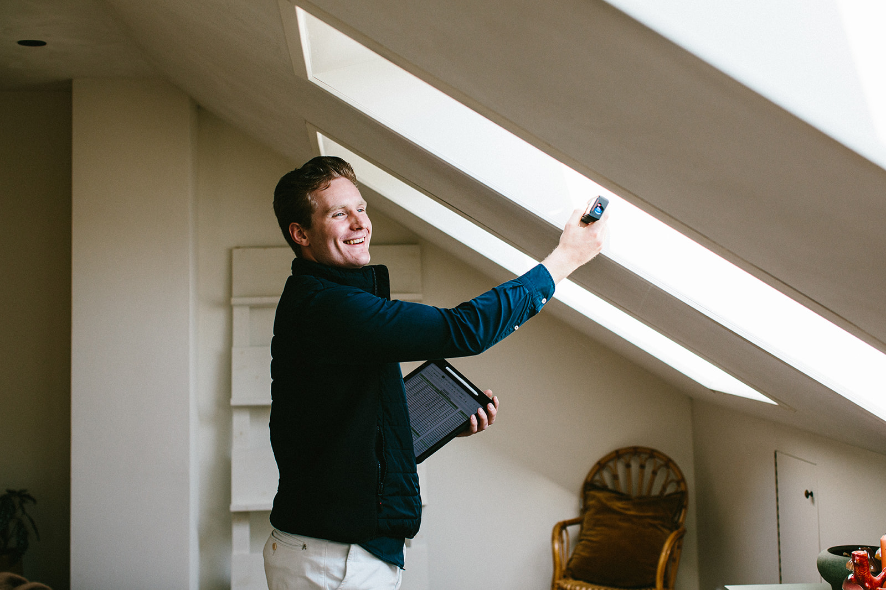
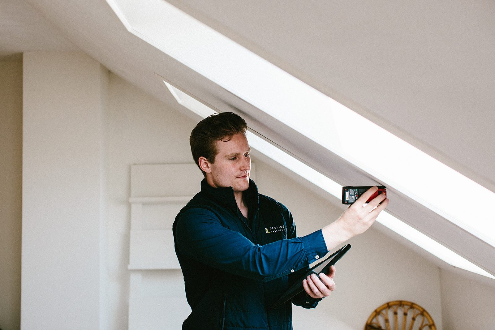
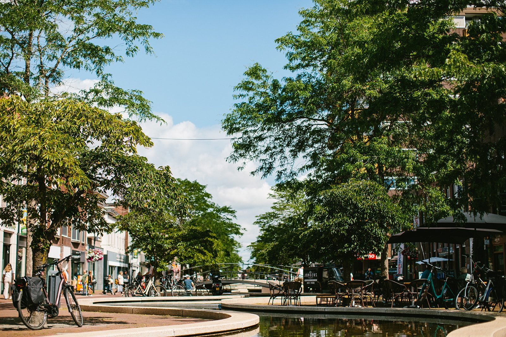
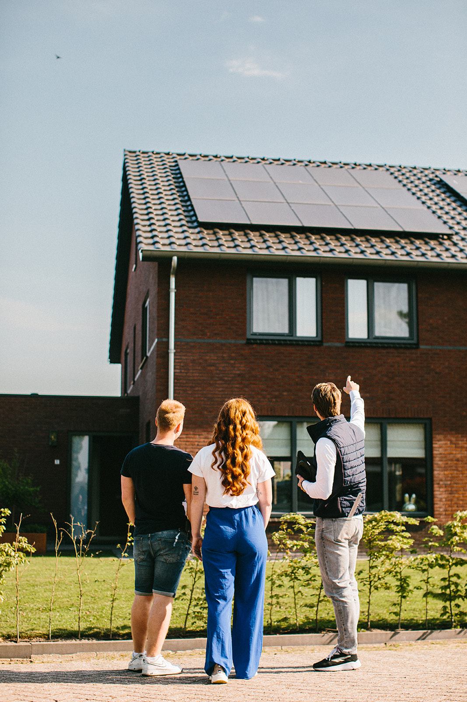
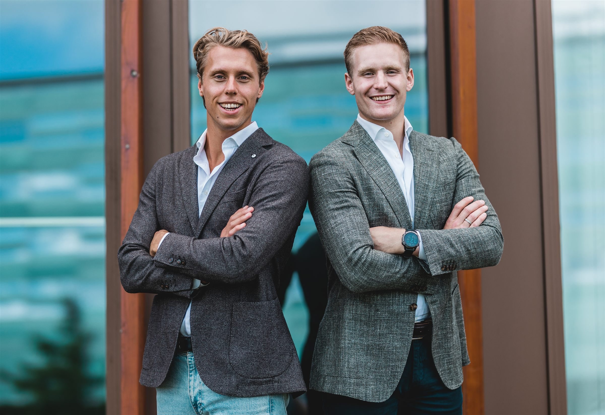
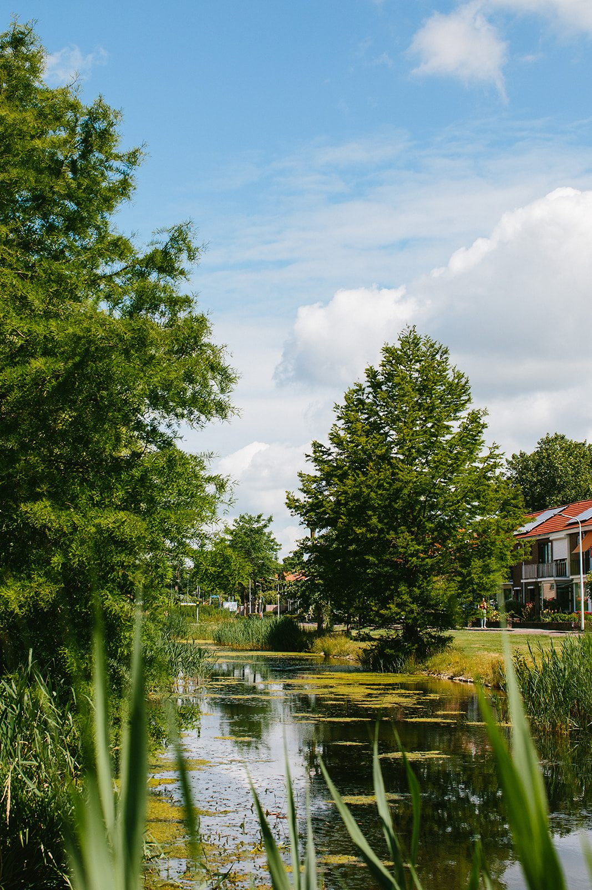

Sinds 1 april 2026 telt uw fundering mee
De fundering is nu een verplicht onderdeel van elke woningtaxatie, met een klasse van A tot E. Klasse D of E? Dan vraagt uw taxateur of geldverstrekker in de regel om onderzoek. Met onze quick scan weet u binnen vijf werkdagen waar u staat: van buiten en van binnen bekeken, ook de kruipruimte, zonder graafwerk. € 399 excl. btw.
Vrijblijvend aanvragen

Ook een energielabel nodig?
DeeLing Funderingscheck is onderdeel van DeeLing Vastgoed. Wij maken ook uw energielabel: binnen zeven werkdagen na de opname, vanaf € 275. Vraag het samen met de quick scan aan in één formulier.

Drie fases
U begint bij de quick scan, en vaak is dat ook de laatste stap. Is er meer nodig, dan volgt een inspectieput of een volledig onderzoek met sonderingen, via een gespecialiseerd bureau.
Hoe het werkt
Wij herstellen niets
Wie funderingen herstelt, heeft belang bij werk. Wij niet: DeeLing voert zelf geen herstel uit. Of er iets gevonden wordt of niet, voor ons maakt het niets uit. Daarom weegt onze uitkomst mee bij koper, makelaar en geldverstrekker.
Waarom dat telt

Niek en Arno
Niek Deelstra en Arno Sydo van Lingen komen zelf langs, schrijven zelf het rapport en bellen u zelf terug. Een eerste vraag stellen kost niets: 06 20 82 10 09.
Contact
Ons werkgebied
Veen, klei, dalende grondwaterstanden en in Groningen ook bodembeweging. Wij kijken per adres naar de bodem.
Meer informatie